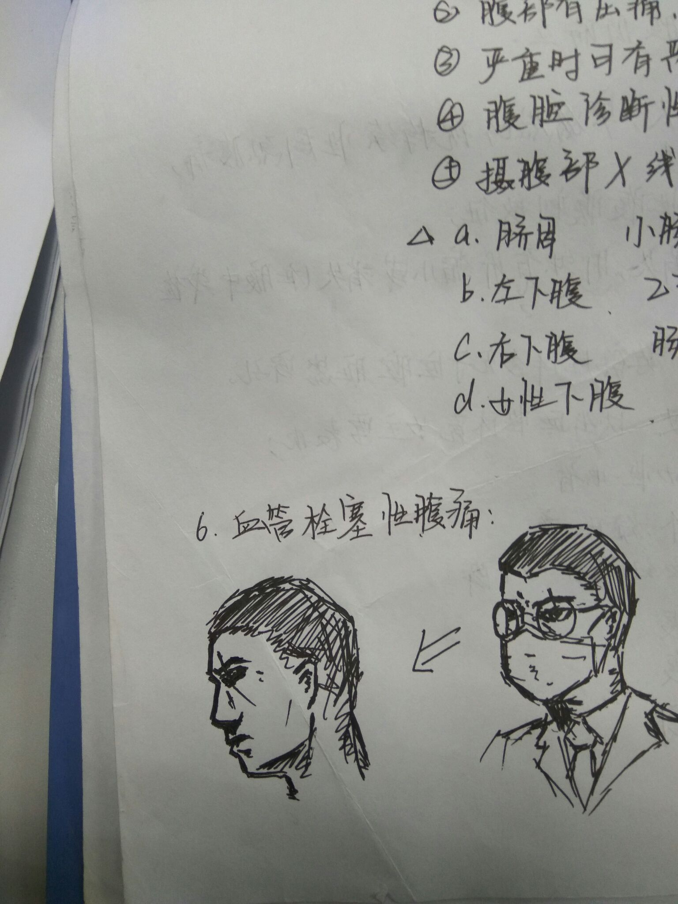

正文:
戴上眼镜和口罩患者还能和我正常交流，只是觉得小哥比较严肃，声音有点哑。
某天下午，我没戴眼镜没戴口罩正在看心电图手册。进来一个患者，女的。我抬头，问了一句“就诊卡给我，哪里不舒服？”
患者坐在圆凳上一句话都不说，这时候，坐我对面的女医生端着茶杯走进来，那个患者赶紧起身坐到同事那边的凳子上，长舒一口气，开始陈述。
我一开始以为，她是妇科的问题，不好意思找男医生，也就没在意。
直到我去静点室送处置票，听见那个女患者在打电话，很小声的说
“这有个医生长得可吓人了……你都不知道，那一眯眼就好像要杀人似的……你明天陪我来复诊你看看不就知道了……那可不，我都吓得不敢说话……诶呀，你明天自己来看……”
我眯眼是因为我近视好吗，同事说我长了张杀人犯的脸。
大概就是这样